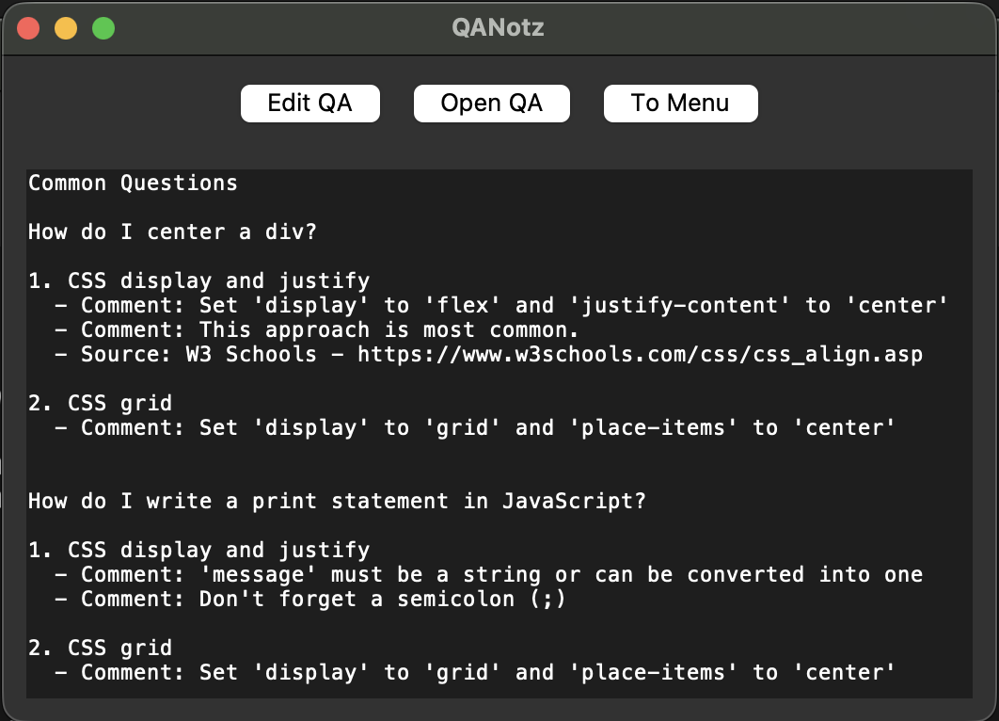

QANotz helps you write out ideas in a natural question-and-answer format, so reviewing later feels fresh. Whether you're studying, brainstorming, or just organizing thoughts, your notes stay clear and easy to revisit.
Check it out on GitHubLearn From Your Notes - Turn your notes into questions you can actually learn from, not just read.
Effortless Note-Taking - Capture thoughts without overcomplicating your workflow.
Human Friendly Format - QANLang, a simple tag-based system, helps you get more done in less time.